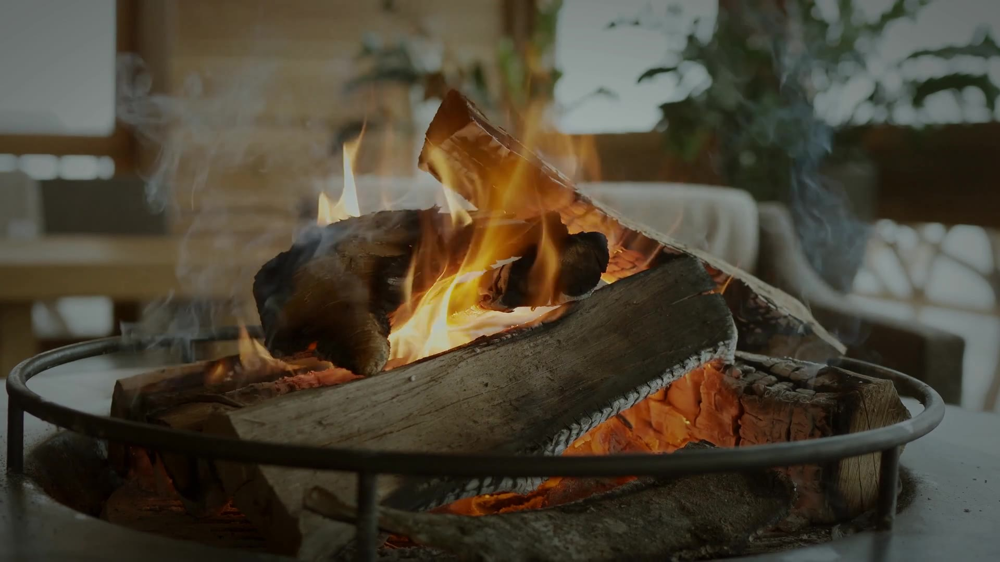

After the trip
All three who travelled found something different from what they expected — the time on the road, the noise, how hard a walk was.
Two traveller contexts
Context A
Wants nature and ready-made organisation, chooses how much to socialise. Needs the programme, free time and cancellation terms.

Context B
Values local culture and care. Needs to see the team, the route and the level of comfort.
Both contexts are composite models built from the interviews, not personas. Either can apply before and after booking.